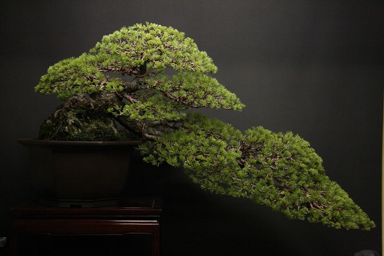

Дерево бонсай
Бонсаи и пенджинг - это искусство придания формы деревьям. При этом важно, чтобы они напоминали взрослое дерево в масштабе. А такие показатели как возраст, размер растения, диаметр ствола не самые главные. Успех зависит не только от рвения и воображения садовода, но и от его знаний и навыков. Главное помнить, что бонсай это прежде всего искусство, а шедевры возникают когда начинаешь импровизировать!
Что такое бонсай?

Топ 10 лучших Бонсай
 Несмотря на то, что выращивание бонсай является хобби людей, живущих в различных уголках нашей планеты, все еще очевидно его азиатское происхождение. Не удивительно, что самые лучшие экземпляры находятся в коллекциях японских мастеров. Ниже вы можете увидеть десять бонсай, которые уникальны и поразительны по своей красоте, балансе и естественности. Эти заставят вас еще больше влюбиться в искусство Бонсай...
Несмотря на то, что выращивание бонсай является хобби людей, живущих в различных уголках нашей планеты, все еще очевидно его азиатское происхождение. Не удивительно, что самые лучшие экземпляры находятся в коллекциях японских мастеров. Ниже вы можете увидеть десять бонсай, которые уникальны и поразительны по своей красоте, балансе и естественности. Эти заставят вас еще больше влюбиться в искусство Бонсай...
Топ 5 самых Старых Бонсай в Мире
 Стало интересно, а какой из ныне существующих бонсай является самым старым на планете Земля? Представьте, сколько усилий понадобилось, чтобы сохранять деревца в течении сотен лет. Пошарил по просторам интернета и вот что из этого получилось. В статье вы познакомитесь со старейшими бонсай, которые сохранились до наших дней...
Стало интересно, а какой из ныне существующих бонсай является самым старым на планете Земля? Представьте, сколько усилий понадобилось, чтобы сохранять деревца в течении сотен лет. Пошарил по просторам интернета и вот что из этого получилось. В статье вы познакомитесь со старейшими бонсай, которые сохранились до наших дней...
Деревья в природе и бонсай
 Мастера говорят, что идеальный бонсай должен напоминать дерево растущее в естественной среде. Но при виде многих работ, даже самых искуссных творцов, возникают мысли, что невозможно встретить похожее деревце в природе. Однако это впечатление обманчиво и просмотрев данную статью вы в этом убедитесь. Обращайте внимание на деревья растущие в природе, они могут принимать самые невероятные формы...
Мастера говорят, что идеальный бонсай должен напоминать дерево растущее в естественной среде. Но при виде многих работ, даже самых искуссных творцов, возникают мысли, что невозможно встретить похожее деревце в природе. Однако это впечатление обманчиво и просмотрев данную статью вы в этом убедитесь. Обращайте внимание на деревья растущие в природе, они могут принимать самые невероятные формы...